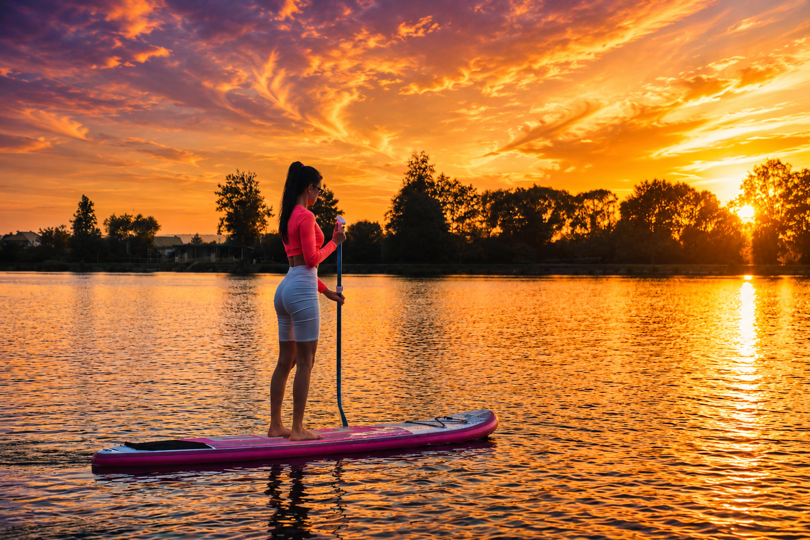
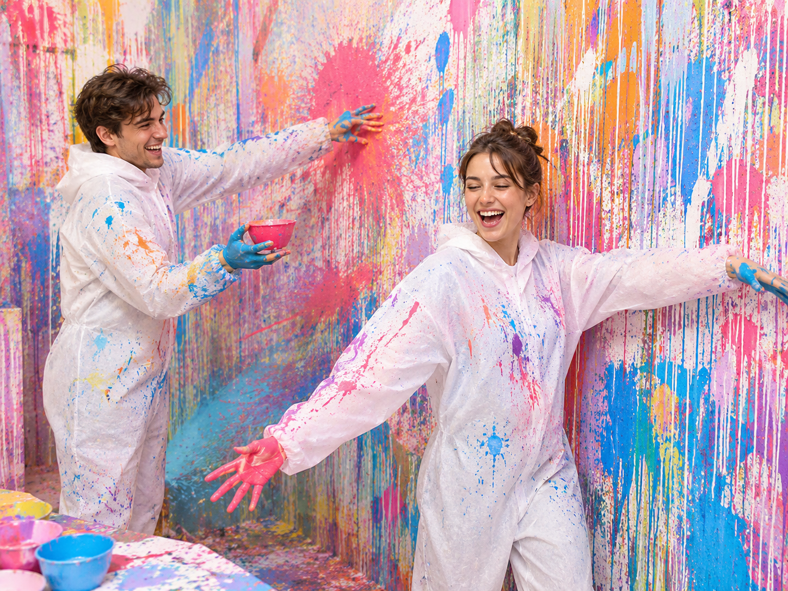
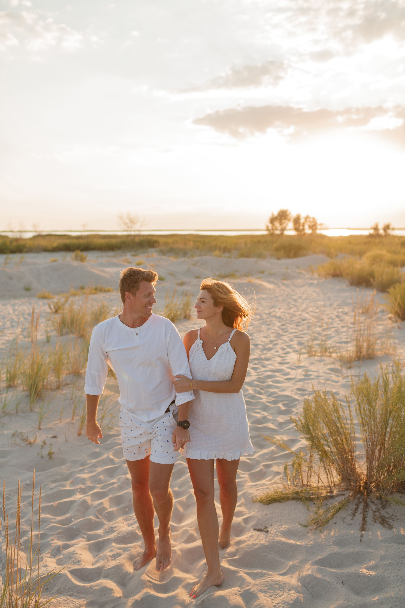
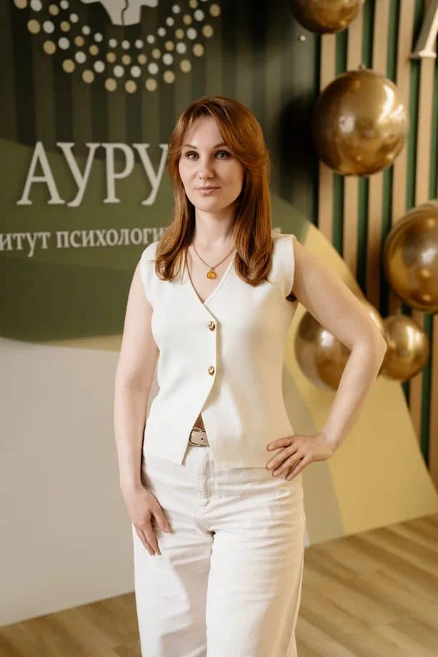
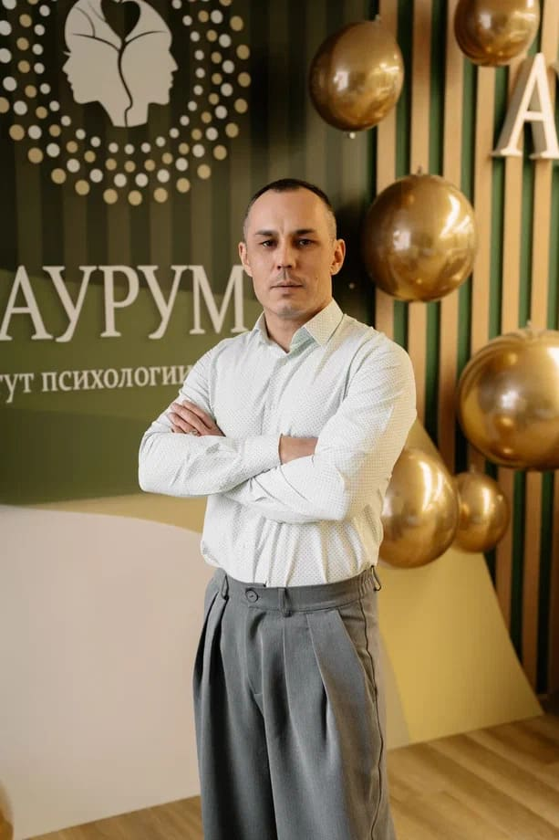

Без спешки, светских ролей и необходимости доказывать, что у вас всё хорошо. Здесь можно приехать одному, вдвоём или с друзьями — и быть собой.
Телесные и психологические практики, вода, лес и бережное общение помогут замедлиться и вернуть внимание к тому, что действительно важно.
01
Услышать себя
Замедлиться и заметить свои настоящие желания вместо привычного «надо».
Наведите или нажмите ↗
01
Что изменится
Вы отделите собственные желания от навязанных ожиданий, заметите привычные роли и уедете с более ясным пониманием следующего шага.
02
Вернуть энергию
Снять накопившееся напряжение через движение, голос, дыхание и контакт с природой.
Наведите или нажмите ↗
02
Что почувствуете
Тело станет свободнее, дыхание — глубже, а вместо фоновой усталости появится живость и желание снова действовать.
03
Стать ближе
Познакомиться без формальностей или заново услышать человека, с которым приехали.
Наведите или нажмите ↗
03
Что останется
Тёплые разговоры, новые знакомства и опыт безопасного общения, в котором не нужно казаться лучше или сильнее.
Не просто отдохнутьа вернуться к себе — живому, смелому и настоящему.

Природа как соавтор
Между лесом и большой водой
Семейный курорт «Утёс» расположен между озёрами Малый Теренкуль и Большой Кисегач. Вокруг — 8,5 гектаров леса, тишина и прозрачный воздух.
8,5гектаров леса
2озера рядом
1вечер у костра
Маршрут выходных
Два дня — одна история
От знакомства с собой — к свободе проявления, воде, дыханию и тихому закреплению результата.
Нажмите на дату, чтобы переключить программу
Встреча
Знакомство с программой и друг с другом
Движение
Телесная танцевальная практика «Прояви себя»
Главный тренинг дня
«Разбуди в себе себя»
«Без масок и ролей»
«Как я проявляю себя в партнёрстве»
«Слепой и поводырь»
«Мои истинные желания и внутренние страхи»
Вечер
Заселение, барбекю и практика у костра «Сжигание страхов»
Утро
Йога на природе (Пробуждение тела и дыхание у озера)
Утро
Завтрак «шведский стол»
Голос и дыхание
Телесная практика «Разбуди голос и дыхание жизни»
Вода и энергия
Прогулка на сапах и практика «Агрессия и энергия жизни»
Финал
Закрепление результата «Наедине с природой»
В программе возможны незначительные изменения.
Дышать
Чувствовать
Быть вместе

Проявляться
Пробовать

Сближаться
Приезжайте так, как хочется
В одиночку — не значит одному
01
С собой
Если хочется перестать быть «всё время в функции» и просто выдохнуть.
02
Вдвоём
Чтобы выйти из рутины, снова разговаривать и вспомнить, почему вы выбрали друг друга.
03
С друзьями
Чтобы прожить вместе не просто отдых, а настоящее приключение и перезагрузку.
17+лет практики
1000+клиентов
Ведущая практик
Юлия Кулясова
Практикующий психолог, системный семейный психотерапевт и бизнес-коуч. Помогает людям находить внутреннюю опору, выстраивать здоровые отношения и двигаться вперёд.
Помогает понять себя и свои желания, прожить сложные эмоциональные состояния, научиться ценить себя и выстраивать отношения с близкими, партнёрами, работой и деньгами. Работает в интегративном, экзистенциально-гуманистическом подходе. После терапии клиенты чаще уходят с облегчением, интересом к себе и спокойствием, легче адаптируются к переменам.

Марина Панфиленко
Психолог, телесно-ориентированный терапевт
Помогает прожить утрату, справиться с сильными эмоциями и внутренними конфликтами, снять телесные зажимы. Работает с психосоматикой и сновидениями.

Руслан Загидуллин
Телесно-ориентированный терапевт, гвоздетерапевт
Работает со стрессом, усталостью и тревожностью, психосоматикой с учётом возрастных изменений. Специалист по возрастной психологии телесного развития.
Выберите свой формат
Пакеты участия
Все цены указаны за одного участника. Количество мест с проживанием ограничено.
Если вы бронируете одно место в двухместном пакете, возможно подселение в дружелюбном формате «лагеря для взрослых». Предпочтительный вариант укажите в заявке.
Всё важное
Вопросы, которые можно не держать в себе
Можно приехать одному?+
Да. Пространство устроено так, чтобы знакомство происходило естественно. Можно участвовать в своём темпе и не чувствовать себя лишним.
Что входит в стоимость?+
Программа двух дней, йога на природе, практики, кофе-брейк, барбекю и прогулка на сапах. В пакетах с проживанием также включены номер и завтрак «шведский стол».
Как работает подселение?+
Можно выкупить два места вместе или забронировать одно. Во втором случае мы можем подобрать соседа по номеру. Свои пожелания укажите в форме.
Нужна ли специальная подготовка?+
Нет. Практики подходят людям с обычной физической подготовкой. Участие добровольное — вы всегда можете выбрать комфортную глубину.
Можно ли приехать вдвоём и жить вместе?+
Да. В заявке выберите вариант «Бронирую на двоих» и укажите имя второго участника. Мы закрепим за вами один номер при наличии мест.
Что взять с собой?+
Удобную одежду для движения и йоги, купальные принадлежности, тёплый слой для вечера у костра и личные вещи для одной ночи.
Обязательно ли участвовать во всех практиках?+
Нет. Мы рекомендуем пройти программу целиком, но вы можете отказаться от любой практики или выбрать более мягкий формат участия.
Подойдёт ли уик-энд мужчинам?+
Да. Программа открыта для женщин и мужчин: можно приехать одному, парой, с друзьями или семьёй.
Есть ли питание?+
В программе предусмотрены кофе-брейк и барбекю. В пакетах с проживанием также включён завтрак в формате «шведский стол».
Что будет при плохой погоде?+
Организаторы адаптируют последовательность активностей и перенесут часть программы в помещения. Незначительные изменения не повлияют на общую идею уик-энда.
Как подтвердить бронь?+
Оставьте заявку с выбранным пакетом и вариантом размещения. Организатор свяжется с вами, подтвердит наличие места и расскажет об оплате.
Можно ли изменить пакет после заявки?+
Да, если в нужной категории ещё есть свободные места. Сообщите об этом организатору как можно раньше.
25–26 июля · Чебаркуль
Ваша новая история может начаться с простого «я еду»
Оставьте заявку — мы свяжемся с вами, подтвердим наличие выбранного размещения и ответим на вопросы.
Спасибо! Ваша заявка отправлена. Организатор свяжется с вами в ближайшее время.